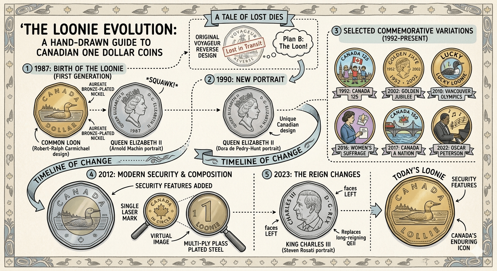

Ah, the loonie. That plucky, golden‑hued disc that jingles in our pockets, buys us a double‑double, and occasionally decides to audition for a role in a vending‑machine symphony. If you've ever handed over a loonie and wondered, "Why on earth is this thing named after a bird that sounds like it's practicing for a horror‑movie soundtrack?", well, you're in luck. Grab a Timbit, settle in, and let's unravel the mystery of Canada's most beloved (and slightly goofy) nickname.
The Birth of a Coin (and a Nickname)
Back in 1987, Canada decided it was time to retire the one‑dollar bill. Why? Because paper money, as it turns out, is surprisingly good at disappearing — into wallets, laundromats, and the mysterious abyss behind couch cushions. The government wanted something more durable, something that could survive a trip through the washing machine (or at least pretend to). Enter the one‑dollar coin, introduced on June 30, 1987.
The original design featured a common loon (Gavia immer) gliding serenely across a tranquil Canadian lake on the reverse side, with Queen Elizabeth II's portrait on the obverse. The loon was chosen not just because it's iconic, but because it's everywhere — from the misty mornings of Algonquin Park to the souvenir postcards you reluctantly buy at gas stations.
Now, here's where the humor kicks in: the Royal Canadian Mint, in all its bureaucratic wisdom, initially called the coin the "one‑dollar piece." Thrilling, right? The public, however, had other plans. Canadians, being the lovably irreverent bunch we are, looked at that elegant waterbird and thought, "Hey, that's a loon! Let's call it a loonie!" And just like that, a nickname was born — faster than you can say "double‑double, please."
Why "Loonie" and Not, Say, "Gooney" or "Quackbuck"?
You might wonder: if we're naming coins after birds, why not go with the mighty Canada goose? (Imagine shouting, "I need two goonies for a poutine!") Or the ever‑polite chickadee? The answer lies in a delightful mix of visibility, symbolism, and a dash of serendipity.
- 1. The Loon Is Unmistakable — Its haunting call is the auditory equivalent of a Canadian sunset: instantly recognizable, a little melancholic, and deeply evocative of the north. When you hear a loon, you know you're in cottage country, not downtown Toronto (unless you're listening to a very dedicated loon‑impersonator on the subway).
- 2. It's Already on the Coin — The loon was front‑and‑center on the reverse. Naming the coin after its most prominent feature was the path of least resistance, much like naming a tourtière after its most prominent ingredient — it was simply staring back at you.
- 3. It Sounds Cute (and Slightly Silly) — "Loonie" rolls off the tongue with a playful bounce. Try saying "loonie" ten times fast without smiling. I dare you. If you manage it, you've either got impressive diction or you're suppressing laughter at the absurdity of a bird‑named currency.
- 4. It Stuck Like Maple Syrup on a Pancake — Once the nickname caught on in casual conversation, it spread through media, comedy sketches, and the occasional embarrassed tourist asking, "Uh, is this a loonie or a weird quarter?" The Mint eventually embraced it, and now "loonie" appears in official documents, bank reports, and even the odd parliamentary debate.
A Brief Ode to the Loonie's Cultural Impact
The loonie isn't just currency; it's a cultural mascot. Consider:
-
Sports Luck — Remember the 2002 Salt Lake City Olympics? Canadian ice‑makers secretly buried a loonie under center ice before the men's and women's hockey games. Both teams won gold. The "lucky loonie" became a legend, and now, whenever Canada hopes for a sporting miracle, someone's likely tucking a loonie somewhere auspicious (or just hoping the vending machine doesn't eat it).
-
Art and Anecdotes — From street performers using loonies as impromptu drumming props to the classic "loonie‑in‑the‑fountain" wish, the coin has found its way into everyday whimsy. There's even a giant loonie statue in Echo Bay, Ontario, because why not celebrate your currency with a six‑metre‑tall bird?
-
Language Play — Canadians have turned "loonie" into a versatile slang term. "That'll cost you a loonie" is as common as "Sorry!" after bumping into someone on the sidewalk. We've also got the "toonie" for the two‑dollar coin — a portmanteau of "two" and "loonie," because we're nothing if not efficient with our wordplay.

The Loonie Today: Still Going Strong
More than three decades later, the loonie remains a steadfast companion in our pockets, piggy banks, and the occasional couch‑cushion excavation. It's survived changes in metal composition (now multi‑ply plated steel with a bronze finish), fluctuations in the economy, and the rise of contactless payments — which, let's be honest, make it harder to impress a date with a casual loonie flip.
And while some may mourn the loss of the paper dollar, the loonie has proven that a little bird‑brained humour can go a long way. It's sturdy, recognizable, and, most importantly, it gives us something to chuckle about when we're counting out change for a poutine.
Final Thoughts
So, why is it called the loonie? Because a bunch of Canadians looked at a graceful waterbird on a coin, thought "That's a loon!" and decided to nickname their money after it — then refused to let the idea go, no matter how many times the Mint tried to call it something sensible.
In a world that often takes itself too seriously, the loonie reminds us to find joy in the small things: a bright‑coloured coin, an echoing call across a lake, and the occasional laugh when we realize we're basically trading in bird‑named currency for our daily caffeine fix.
Next time you hear a loon's cry echoing over a misty lake, give a little nod to the feathered friend that helped name your pocket change. And if you're feeling extra generous, toss a loonie into a fountain and wish for whatever you want. Just maybe keep an eye out for any mischievous geese looking to start a naming rivalry.
Stay loonie, my friends.
P.S. If you ever find yourself in a debate about whether the loonie or the toonie is superior, remember: the loonie came first, and it's got the better call. Case closed.